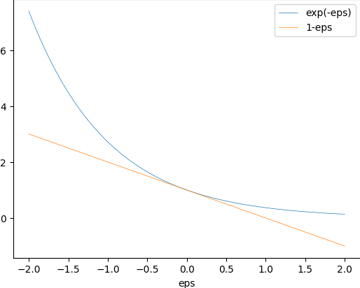

Advanced Machine Learning
02: foundations
Outline for the lecture
- Problem statement
- Inductive bias
- Bound for the probability of error
Problem Statement
setup
- Domain Set ${\cal X}$ (all papayas)
- Label set ${\cal Y}$
- Training data
-
$S = ((x_1,y_1)\dots (x_m,
y_m))$.
Sequence of pairs in $\cal{X}\times\cal{Y}$ - The learner's output
-
$h: \cal{X} \rightarrow \cal{Y}$
- A (simple) data-generation model
- $\cal{D}$ - distribution of papayas
- $f: \cal{X} \rightarrow \cal{Y}$ - true labeling function
- $y_i = f(x_i) \forall i$
Measure of success: true loss
for $A \subset \cal{X}$, ${\cal D}(A)$ is
how likely to observe $x\in A$
$A$ is an event expressed as
$\pi:{\cal X}\rightarrow \{0,1\}$
$A = \{x\in {\cal X}: \pi(x) = 1\}$
then $\mathbb{P}_{x \sim {\cal D}}[\pi(x)]$ expresses ${\cal D}(A)$
$L_{({\cal D},f)}(h)
\stackrel{\text{def}}{=}\mathbb{P}_{x
\sim {\cal D}}[h(x) \ne f(x)]$
generalization error, the risk, the
true error of $h$, or loss!
Measure of success: empirical loss
- Training set $S\sim {\cal D}$
- Expected predictor $h_s: \cal{X} \rightarrow \cal{Y}$
- Find $h_S$ that minimizes a loss with respect to unknown ${\cal D}$ and $f$
$L_{S}(h) \stackrel{\text{def}}{=}
\frac{\mid\{i\in\{1,\dots,m\}:h(x_i) \ne y_i\}\mid}{m}$
Empirical Risk Minimization
What can go wrong?
overfitting

$h_S(x) = \begin{cases}
y_i & \text{if } \exists i \in \{1,\dots,m\} s.t. x_i=x\\
0 & \text{otherwise}
\end{cases}
$
$L_{S}(h_S) = 0$ yet $L_{\cal D}(h_S) = 1/2$
Inductive bias
Bait shyness
Pigeon superstition
B. F. Skinner conditions a pigeon
What about rat superstition and conditioning?
What can we do in our case?
- Search over a restricted search space.
- Choose hypothesis class ${\cal H}$ in advance
- $\forall h\in {\cal H}, h: \cal{X} \rightarrow \cal{Y}$
Inductive bias
Other inductive biasi
- Maximum conditional independence
cast in a Bayesian framework, try to maximize conditional independence (Naive Bayes) - Minimum cross-validation error
- Maximum margin
- Minimum description length
- Minimum features
- Nearest neighbors
Finite Hypothesis Classes
Bound the probability of error
Assumptions
The Realizability Assumption: There exists $h^* \in {\cal H} s.t. L_{{\cal D}, f}(h^*)=0$. This implies: with probability 1 over random samples $S\sim {\cal D}$ labeled by $f$, we have $L_S(h^*)=0$
The i.i.d. Assumption: Samples in the training set are independent and identically distributed. Denoted as $S\sim {\cal D}^m$
Confidence and accuracy
The risk $L_{({\cal D},f)}(h_S)$ depends on the randomly picked training set $S$. We say, the risk is a random variable.
Some training sets $S$ can be really bad! Denote the probability of getting a nonrepresentative sample by $\delta$
Let's call $(1-\delta)$ - confidence parameter
Can't hope to always have perfect loss $L_{({\cal D}, f)}=0$. Let's introduce the accuracy parameter $\epsilon$.
Failure is when $L_{({\cal D}, f)}>\epsilon$
Success is when $L_{({\cal D}, f)}\le \epsilon$
What is the probability of a bad sample that fails the learner?
$S\mid_x = (x_1, x_2, \dots, x_m)$ - instances of the training set
We want to upperbound ${\cal D}^m(\{S\mid_x : L_{({\cal D}, f)}(h_S) > \epsilon\})$
The set of "bad" hypotheses ${\cal H}_B = \{h\in {\cal H} : L_{({\cal D}, f)}(h) > \epsilon\})$
Set of misleading samples $M = \{S\mid_x : \exists h \in {\cal H}_B, L_S(h)=0\}$
But remember our assumption?
The Realizability Assumption: There exists $h^* \in {\cal H} s.t. L_{{\cal D}, f}(h^*)=0$. This implies: with probability 1 over random samples $S\sim {\cal D}$ labeled by $f$, we have $L_S(h^*)=0$Means $L_S(h_S) = 0$, where $h_S \in \underset{h\in{\cal H}}{\argmin}L_S(h)$. Hence $L_{({\cal D}, f)}(h_S) > \epsilon$ can only happen if for some $h\in {\cal H}_B$, $L_S(h)=0$
follows $\{S\mid_x : L_{({\cal D}, f)}(h_S) > \epsilon \} \subseteq M$
We want to upperbound ${\cal D}^m(\{S\mid_x : L_{({\cal D}, f)}(h_S) > \epsilon\})$
$\{S\mid_x : L_{({\cal D}, f)}(h_S) > \epsilon \} \subseteq M$
rewrite set of misleading samples
$M = \{S\mid_x : \exists h \in {\cal H}_B, L_S(h)=0\}$
as $M = \underset{h\in {\cal H}_B}\bigcup \{S\mid_x : L_{S}(h) = 0 \}$
${\cal D}^m(\{S\mid_x : L_{({\cal D}, f)}(h_S) > \epsilon\}) \le {\cal D}^m(M)$
${\cal D}^m(M) = {\cal D}^m(\underset{h\in {\cal H}_B}\bigcup \{S\mid_x : L_{S}(h) = 0 \})$
Confidence and accuracy
Union Bound: For any two sets $A$, $B$ and a distribution $\cal D$ we have ${\cal D}(A\cup B) \le {\cal D}(A) + {\cal D}(B)$
hence
${\cal D}^m(\{S\mid_x : L_{({\cal D}, f)}(h_S) > \epsilon\}) \le {\cal D}^m(\underset{h\in {\cal H}_B}\bigcup \{S\mid_x : L_{S}(h) = 0 \})$
$\le \sum_{h\in {\cal H}_B}{\cal D}^m(\{S\mid_x : L_{S}(h) = 0 \})$
${\cal D}^m(\{S\mid_x : L_{({\cal D}, f)}(h_S) > \epsilon\}) \le {\cal D}^m(\underset{h\in {\cal H}_B}\bigcup \{S\mid_x : L_{S}(h) = 0 \})$
$\le \sum_{h\in {\cal H}_B}{\cal D}^m(\{S\mid_x : L_{S}(h) = 0 \})$
let's put a bound on each summand separately

Confidence and accuracy
Let's put a bound on each summand separately
${\cal D}^m(\{S\mid_x : L_{S}(h) = 0 \}) = $
${\cal D}^m(\{S\mid_x : \forall i, h(x_i) = f(x_i) \})$
$= \prod_{i=1}^m {\cal D}(\{x_i: h(x_i) = f(x_i)\})$
${\cal D}^m(\{S\mid_x : L_{S}(h) = 0 \}) = $
${\cal D}^m(\{S\mid_x : \forall i, h(x_i) = f(x_i) \})$
$= \prod_{i=1}^m {\cal D}(\{x_i: h(x_i) = f(x_i)\})$
remember we are only considering bad hypotheses
$h\in{\cal H}_B = \{h\in {\cal H} : L_{({\cal D}, f)}(h) > \epsilon\}$
$h\in{\cal H}_B = \{h\in {\cal H} : L_{({\cal D}, f)}(h) > \epsilon\}$
${\cal D}(\{x_i: h(x_i) = f(x_i)\}) = 1 - L_{({\cal D}, f)}(h) \le 1-\epsilon$
using $1-\epsilon \le e^{-\epsilon}$
${\cal D}^m(\{S\mid_x : L_{S}(h) = 0 \}) \le (1-\epsilon)^m \le e^{-\epsilon m}$
${\cal D}^m(\{S\mid_x : L_{S}(h) = 0 \}) \le (1-\epsilon)^m \le e^{-\epsilon m}$
the final bound
- ${\cal D}^m(\{S\mid_x : L_{S}(h) = 0 \}) \le e^{-\epsilon m}$
- ${\cal D}^m(\{S\mid_x : L_{({\cal D}, f)}(h_S) > \epsilon\}) \le \sum_{h\in {\cal H}_B}{\cal D}^m(\{S\mid_x : L_{S}(h) = 0 \})$
- $\sum_{h\in {\cal H}_B}{\cal D}^m(\{S\mid_x : L_{S}(h) = 0 \}) \le \mbox{ ?}$
- $\sum_{h\in {\cal H}_B}{\cal D}^m(\{S\mid_x : L_{S}(h) = 0 \}) \le |{\cal H}_B|e^{-\epsilon m}$
- $|{\cal H}_B|e^{-\epsilon m}\le |{\cal H}|e^{-\epsilon m}$
- ${\cal D}^m(\{S\mid_x : L_{({\cal D}, f)}(h_S) > \epsilon\}) \le \sum_{h\in {\cal H}_B}{\cal D}^m(\{S\mid_x : L_{S}(h) = 0 \})$
-
${\cal D}^m(\{S\mid_x : L_{({\cal D}, f)}(h_S) > \epsilon\}) \le |{\cal H}|e^{-\epsilon m}$